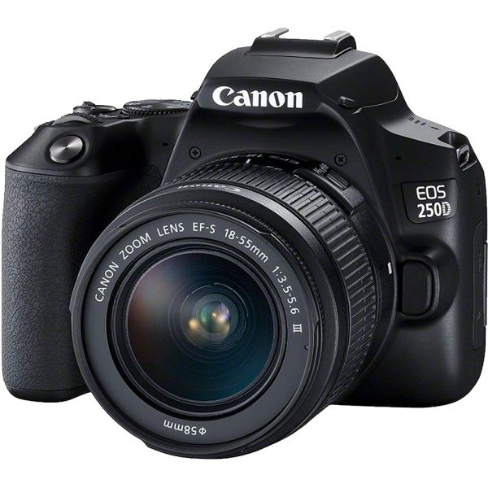
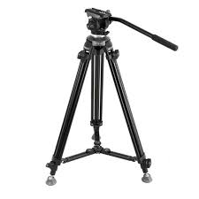
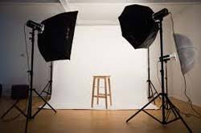

Mi Experiencia en Fotografía
La fotografía es una de mis pasiones. A través de mi lente, busco capturar momentos únicos y contar historias visuales. He trabajado en varios proyectos que van desde fotografía de productos hasta retratos, y cada uno me ha permitido explorar diferentes técnicas y estilos.
Galería de Productos
-
Producto 1: Cámara DSLR
Una cámara versátil ideal para capturar imágenes de alta calidad en cualquier situación.
-
Producto 2: Lente Gran Angular

Perfecto para paisajes y arquitectura, este lente ofrece una perspectiva amplia.
-
Producto 3: Trípode Profesional
Proporciona estabilidad y soporte para tomas largas y con poca luz.
-
Producto 4: Iluminación de Estudio
El equipo ideal para obtener un control completo sobre la luz en tus sesiones fotográficas.